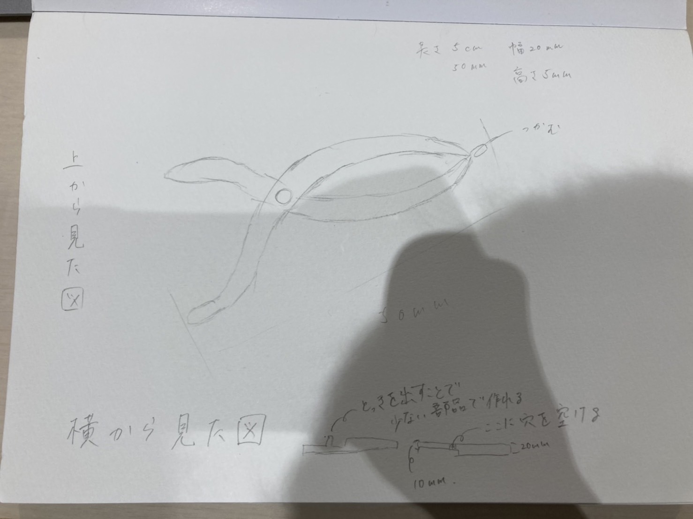
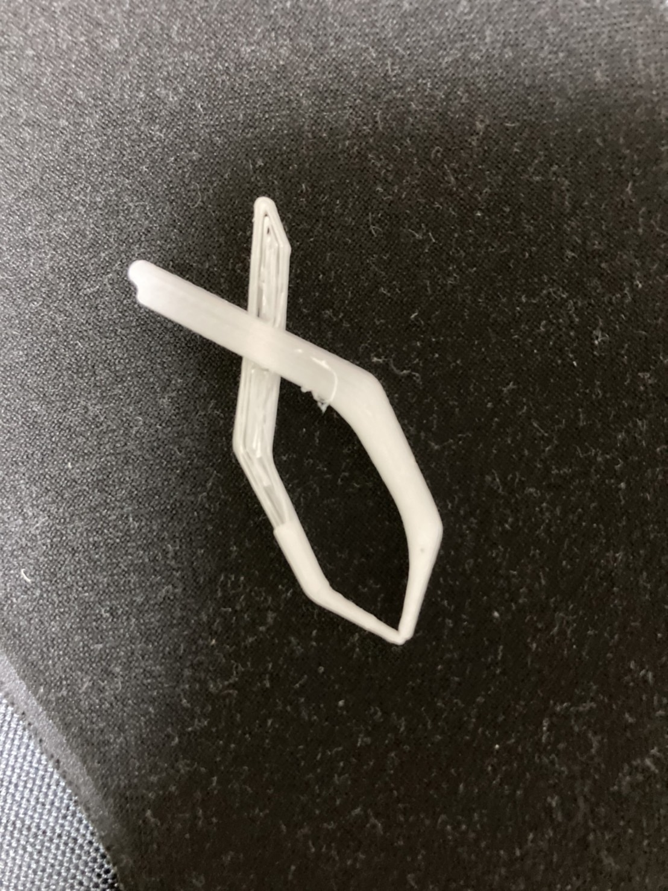
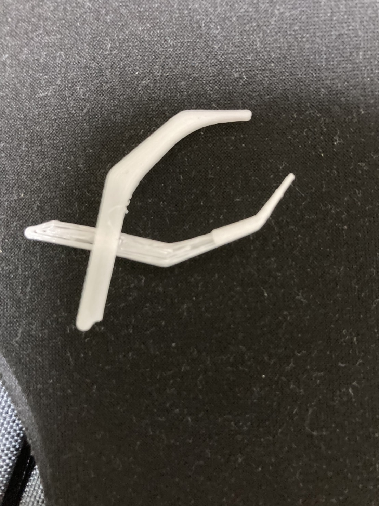

ハサミ型ピン
構想段階のスケッチ

実際の完成品

↑閉じた図

↑開いた図
STLファイル
STLファイル一つ目
STLファイル二つ目
作品の説明
何故このような形のピンセットを作ろうと思ったかというと
ハサミのような形状の物は留め具が必要であったりと
難しいと思ったのですが、片方に突起を作ることでパーツを２つに抑えて作ることが出来ました。
難しかったことはパーツに凹凸をつけることで、一箇所だけ押し出したりするのがとてもむずかしかったです。
工夫点としてはピンセットの可動域を広げるためにパーツのつなぎ部分の周りを少しだけ押し出しを使って一段高さを下げてピンの先がちゃんと合致するように工夫しました。
作品を作ろうと思った経緯
このピンセットの授業を聞いて真っ先に思いついたのがこのハサミ型ピンでした。
制作途中に調べたこと(参考)
スケッチ寸法とフィレット
ボディの分割方法